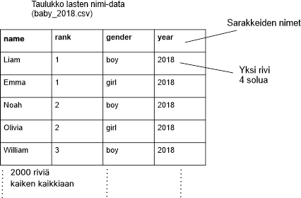

Taulukko on yleinen tapa organisoida dataa tietokoneilla
Luodaan seuraavaksi katsaus taulukkodataan. Dataa voidaan varastoida ja manipuloida tietokoneessa taulukoiden avulla. Taulukot ovat yleinen tapa järjestää merkkijonoja (luonnollista kieltä), lukuja tai esimerkiksi päivämääriä. Erityisesti tarkaselemme Yhdysvaltain sosiaaliturvajärjestelmän lasten nimet -taulukkoa.
Lasten nimet -esimerkki
Vuosittain syntyneiden lasten nimet
1000 suosituinta poikien ja tyttöjen nimeä, yhteensä 2000
Järjestetty taulukkoon
Sarakkeet: nimi, sijoitus, sukupuoli, vuosi
Rivit: jokaisella rivillä on yhteen nimeen liittyvä data

Taulukko koostuu 2000 rivistä; Jokaisella rivillä on yhteen nimeen liittyvät tiedot
Jokainen rivi on jaettu neljään sarakkeeseen
Jokaisella neljästä sarakkeesta on oma nimensä. Sarakkeiden nimet: (vauvan) nimi, sijoitus, sukupuoli, vuosi
Taulukot ovat hyvin yleisiä
Suorakulmaisen muotoiset taulukot ovat yleisimpiä
Tietokanta: alkeellisen taulukkodatan laajennus
Sarakkeiden lukumäärä on pieni
Rivejä voi olla jopa miljoonia tai miljardeja
Esim. sähköpostin saapuneet -kansio: yksi rivi = yksi saapunut sähköposti, sarakkeet: päivämäärä, otsikko, keneltä tullut ...
Esim. Tori.fi: yksi rivi = myytävä tavara, sarakkeet: kuvaus, hinta, myyjä, päivämäärä ...
Suuri osa tietokoneella säilytettävästä tiedosta on järjestetty taulukoihin. Jokainen "asia", jonka haluamme varastoida - lapsen nimi, jonkun yhteystiedot, Tori.fi-ilmoitus - on yhdellä rivillä. Rivillä olevien sarakkeiden lukumäärä on yleensä pieni - sarakkeissa on tietoa, joka liittyy varastoitavaan "asiaan". Esimerkiksi yhdelle riville säilötyllä Tori.fi-ilmoituksella on muutama sarake: lyhyt kuvaus, pidempi kuvaus, hinta, myyjä ja muutama muu sarake.
Sarakkeita on vähän, mutta rivejä voi olla valtavasti - tuhansia tai miljoonia. Tietokanta-termi viittaa laajempaan kokonaisuuteen taulukoita. Myös taulukkolaskentaohjelmissa (esim. Excel) käytetyt tiedot varastoidaan tyypillisesti taulukoihin.
Taulukko-ohjelmointi
We'll start with some code -- SimpleTable -- which will serve as a foundation for you to write table code. Run the code to see what it does.
Aloitamme yksinkertaisella ohjelmalla nimeltään SimpleTable, joka toimii perustuksena taulukko-ohjelmillemme. Suorita ohjelma nähdäksesi, mitä se tekee.
Vauvojen nimidata on "baby_2018.csv"-tiedostossa
--".csv" on lyhenne sanoista "comma separated values", ja se on laajalti käytetty tallennusmuoto, jolla taulukko voidaan varastoida tekstitiedostona.
for (row: table) { -koodinpätkä on silmukka, jonka sisältä löytyvä
print(row) tulostaa kunkin rivin sarakkeen yhdelle riville.
Taulukkokyselyn logiikkaa
Seuraavaksi valitsemme rivit, jotka haluamme näkyviin (if-lauseke koodissa)
Tietokantojen terminologiaa -- "kysely" (eng. query) tietokannasta
esimerkki: valitse rivit, joissa nimen sijoitus on 6.
if (row.getField("rank") == 6) { ...
Ylläoleva ohjelma käy silmukkana läpi jokaisen rivin taulukossamme. If-lauseke tulostaa rivin, jos sille annettu ehto on ottta - tässä ehtona on, että rivillä olevan nimen sijoitus täytyy olla 6. If-lausekkeella voisi hakea mitä tahansa muutakin tietoa taulukosta.
row.getField("field-name") -- valitsee sarakkeen yhdeltä riviltä
Sarakkeiden nimet (englanniksi) nimitaulukossamme: name, rank, gender, year
== testaa, ovatko kaksi arvoa samat
Varoitus: yksittäistä yhtäsuuruusmerkkiä = käytetään arvon asettamiseen muuttujalle, ei vertailuun. Käytä kaksinkertaista yhtäsuuruusmerkkiä == if-testauksessa.
Muita vertailuoperaatioita: < > <= >=
Esim. valitse rivit, joilla lapsen nimi on "Alice":
if (row.getField("name") == "Alice") { ...
Rivi-objektilla on row.getField("field-name")-funktio, joka palauttaa datan kyseisen rivin yhdeltä sarakkeelta. Jokaisella sarakkeella on nimensä - "name", "rank", "gender" ja "year" tässä tapauksessa - ja sarakkeen nimi annetaan getField()-funktiolle osoittaaksemme, minkä sarakkeen tiedon haluamme, esim. row.getField("rank") palauttaa kyseisen rivin sijoituksen, siis rank-sarakkeen tiedon.
JavaScriptillä voit kokeilla, ovatko kaksi arvoa samat kahdella yhtäsuuruusmerkillä: ==. Käyttämällä "=="-merkkejä ohjelma kokeilee, onko sarakkeessa oleva nimi "Alice": row.getField("name") == "Alice"
Huomaa, että yksittäinen yhtäsuuruusmerkki = antaa arvon muuttujalle, eikä vertaile kahta arvoa. Varsin yleinen virhe on laittaa yksittäinen yhtäsuuruusmerkki testauslausekkeeseen, kun pitäisi laittaa kaksi. Tällä kurssilla "Run"-nappi koodien alla huomaa kyllä vahingossa laitetun yksittäisen yhtäsuuruusmerkin if-testauksessa ja antaa virhekoodin. Vertailua voi tehdä myös esimerkiksi suurempi kuin tai pienempi kuin -merkeillä: < > <= >=
Taulukkokyselyn esimerkkejä
Kirjoita ylläolevaan ohjelmaan koodia, joka etsii nämä tiedot:
Vauvataulukon sarakkeet: name, rank, gender, year
Nimisarakkeen arvo on "Alice", "Robert", "Bob", "Abby", "Abbey" (kokeile näitä yksi kerrallaan)
rank-sarakkeen arvo on 1
rank-sarakkeen arvo on < 10
rank-sarakkeen arvo on<= 10
rank-sarakkeen arvo on > 990
sukupuoli-sarakkeen arvo on "girl"
Kaikissa esimerkeissä on sama idea: for-silmukka käy läpi koko taulukon kaikki 2000 riviä ja arvioi niitä yksi kerrallaan. Silmukka tulostaa ne rivit, joilla arvo on haluamamme.
Ratkaisut:
If-kysely silmukan sisällä:
table = new SimpleTable("baby_2018.csv");
for (row: table) {
if (row.getField("name") == "Alice") {
print(row);
}
}
// Change string to "Robert", "Bob", etc.
if (row.getField("rank") == 1) {
print(row);
}
if (row.getField("rank") < 10) {
print(row);
}
if (row.getField("rank") <= 10) {
print(row);
}
if (row.getField("rank") > 990) {
print(row);
}
if (row.getField("gender") == "girl") {
print(row);
}